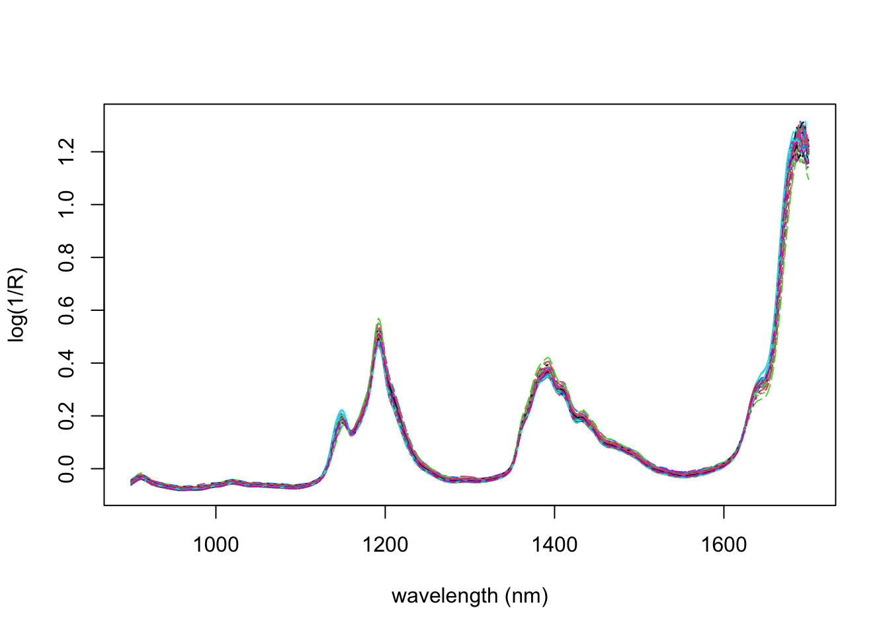

1.5 Computer tasks
Q1
The gasoline dataset in the pls dataset consists of data on 60 different gasoline samples. For each sample, the near-infra-read (NIR) spectrum has been measured, which consists of measurements at 401 different wavelengths.
library(pls)
data(gasoline)
matplot(seq(900,1700,2),t(gasoline$NIR), type='l', ylab='log(1/R)', xlab='wavelength (nm)')
Also recorded is the octane number of each sample. We will use the NIR measurements to predict the octane number of each sample. Note that here \(n=60\) and \(p=401\), so we have many more covariates than samples.
- Start by using the
lmcommand to predict the octane number from the NIR spectra.
What happens? How many of the coefficients are estimated?
We’ll now try principal component regression. First, project the NIR values onto the first 10 principal components. Then build a linear model using
lm. Split the data into a training set containing 40 observations, and a test set containing 20 observations. What is the predictive accuracy of your model?Now use the
pcrcommand from theplspackage. You can use cross-validation to assess the prediction accuracy, and plot the predictive accuracies, for different number of principal components using the code below. How many principal components would you retain in your model to ensure the best performance?
gasoline.pcr <- pcr(octane~NIR, data=gasoline, validation='CV')
summary(gasoline.pcr)
plot(RMSEP(gasoline.pcr), legendpos = "topright")- Now try ridge regression. What value would you choose for the ridge penalty term \(\lambda\)?
Q2
The lm command in R will automatically work if you pass in a matrix of response variables. To demonstrate this, lets try to predict the sepal width and sepal length from the petal length and widths for the iris data.
Check that the parameter estimates you find are the same as if you did two univariate linear regressions.